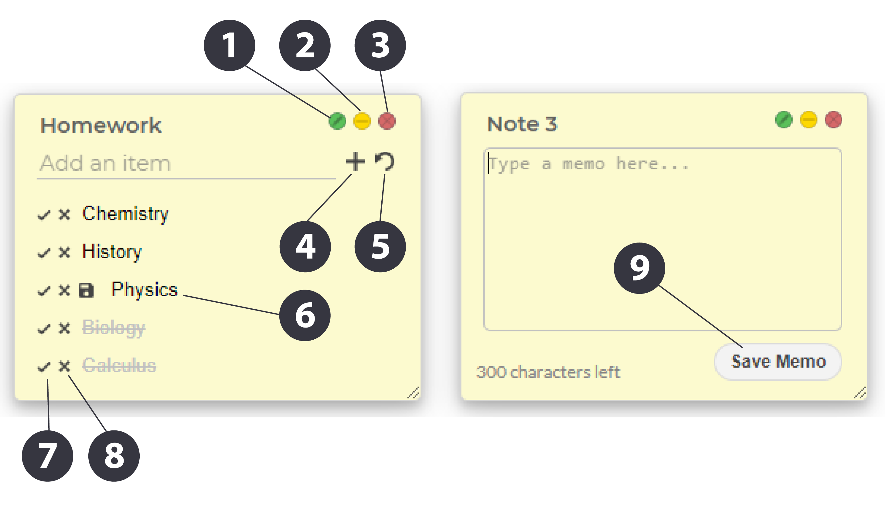

×
a quick guide
You can add "List" and "Memo" notes to your workspace. Both will sync to your Google account so you can access your notes anywhere.
"List" notes allow you to add, remove, and cross out items in a todo-list format. "Memo" notes allow you to write and save short paragraph-style notes.
You can drag notes across the screen by double-clicking the note headers. You can also rearrange list items by right clicking on the item in the list.

| 1. Edit Title |
Click to edit title. Click again or hit Enter to save changes. |
| 2. Minimize |
Minimize note. To completely hide the note, click on the note title in the Notes Dock. |
| 3. Delete Note |
Delete note. Careful - this cannot be undone. |
| 4. Add Item |
Type in your input and click the "+" button or hit Enter to add an item to the list.
If you want to add multiple lines in a single list item, you can edit the item (see #6) after it has been added.
|
| 5. Undo Remove |
Recover the most recent item deleted from the list. |
| 6. Edit Item |
Left-click on any item on the list to edit its contents. Click the "Save" icon that appears to save your edit.
Right-click on any item to move it up or down the list.
|
| 7. Cross Off |
Cross off an item from the list. |
| 8. Remove Item |
Remove an item from the list. This can be undone with your most recent removal. |
| 9. Save Memo |
Save a memo-style note. Remember to do this every time you make an edit. |